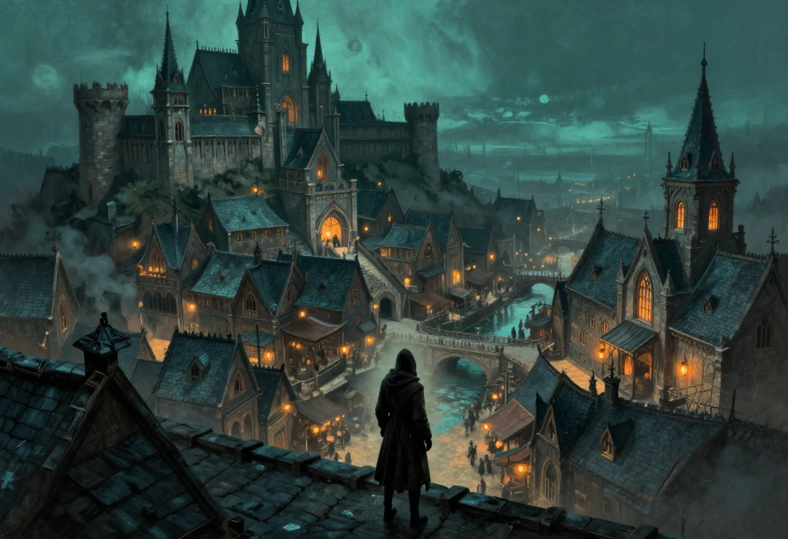

Le monde de Nightprowler ne succède que de peu à l'époque médiévale. On y trouve des humains tels qu'on en garde le souvenir chez nous à une époque semblable, mais ils ne constituent pas la seule race intelligente et organisée. Il existe un continent sur lequel reposent, entre autres choses, sept cités où se concentre la grande majorité de la population. L'une d'elles, Samarande, se caractérise par une densité de population et une affluence, une immigration aussi, des plus développées.
Vivre retiré est chose difficile dans ce monde, qui est encore loin d'avoir perdu toute sa sauvagerie naturelle et qui ne rend pas la culture fort aisée. Les gens ont besoin de s'entraider, de vivre en communauté, en ville, pour ne plus simplement chercher à survivre mais à vivre vraiment. Du moins, un peu mieux.
Car dans ces cités, et en particulier dans Samarande, s'est instauré un régime princier qui creuse énormément l'écart social entre les classes les plus privilégiées, aristocratie et noblesse, et la plèbe, le petit peuple. Il y a en outre de la place pour nombre de bourgeois plus ou moins fortunés, ainsi que pour nombre de marchands et de prestataires de services des plus variés.
Dans Samarande, il y a un Prince accompagné d'un conseil de personnes politiquement très éminentes, et dont l'influence est forte, selon les membres, sur la religion, sur l'ordre et son respect, sur la force militaire ou de défense, et sur l'organisation des différentes guildes marchandes.
La religion est monothéiste : c'est le Culte de la Pensée, qui voue une adoration exclusive au Dieu seul et unique Arlam. L'ordre, lui, repose sur une chaîne de responsabilités. Différents baillis ont sous leurs ordres différents prévôts, qui ont eux-mêmes sous leurs ordres différents préfets de jour et de nuit, lesquels se partagent par sections juridiques tous les quartiers de Samarande. Une ville de cette taille ne se surveille pas autrement.
Inévitablement, suite à l'expansion formidable de la ville et aux écarts sociaux qui se sont creusés, de nombreux groupes de voleurs ont vu le jour. Ces groupes, compte tenu de leur grand nombre et du chaos politico-social engendré, ont dû finir par se regrouper suivant certaines spécialités, certains idéalismes ou certaines juridictions. Des guildes se sont formées et ont pris suffisamment d'importance pour s'attribuer des rôles d'organisation et de régulation du crime dans les cités, sans quoi l'équilibre de Samarande, suivi très rapidement par celui des autres cités, aurait périclité.
Il existe donc des guildes de différentes importances, popularités et spécialités. Ces guildes ont elles-mêmes été fondées autour de familles importantes de ces cités. Ces familles sont souvent regroupées en clans, quand la famille n'est pas elle-même un clan. Et ces clans se distinguent avant tout par leurs origines ou par leurs idéalismes.
Dans tout ce petit monde, on trouve en particulier, outre les humains avec toutes leurs multiplicités et croisements raciaux, des êtres mi-homme mi-félins, les félis, ainsi que des êtres mi-homme mi-rongeurs, les gouris, reclus de la société, chassés et contraints de se retrancher sous terre, dans des dédales de galeries en dessous des égouts de la ville.
Ce ne sont pas là les seules races civilisées. Il existe également les elfes, qui se sont pour la grande majorité organisés en grandes familles, passant le plus clair de leur temps sur de grandes nefs elfiques à voyager de continent en continent et à vivre du commerce de leurs spécialités respectives. Il existe aussi les nains, dont la majorité aspire à une vie paisible et artisanale, un train-train quotidien qui leur permet de démontrer leur habileté et leur professionnalisme à la création d'objets et de constructions de tout genre. Bien entendu, il existe parmi les elfes et les nains quelques déviants qui ne supportent pas de se contenter de la vie trop coutumière et répétitive de leurs congénères.
Hormis les humains, présents en grande majorité dans les sept cités, les félis, légèrement aquaphobes et paresseux, les gouris, que l'on juge souvent comme la cause de bien des maux de Samarande, les elfes et les nains, il existe d'autres créatures. Ainsi des êtres mi-homme mi-reptiles en provenance du fin fond des Monts Ocres, montagnes dans lesquelles les nains ont fondé il y a bien longtemps déjà une cité souterraine du nom de Kalaar, qu'ils ont dû abandonner suite à la découverte de ces êtres reptiliens envahissants, les hélodermes.
Certains auraient également rencontré, soi-disant, des êtres mi-batraciens mi-humains, ou encore des hommes qui auraient la capacité de se transformer en une bête sauvage, humaine, mais très proche du loup. Il est également connu de tous que les démons et autres entités démoniaques et nuisibles ont existé, existent et existeront probablement encore très longtemps. Certains ont aussi déjà parlé d'humains immortels qui suceraient le sang des gens pour survivre, de gros vers de l'ordre du mètre de diamètre qui creusent des galeries de manière chaotique et qui semblent avoir trouvé les sous-sols de Samarande très à leur goût, et d'êtres vivants revenant d'entre les morts, hanter le monde réel en quête désespérée de leur âme perdue, suite à une mort dans des circonstances particulièrement atroces.
Il faut tout de même savoir que la magie, un art encore très obscur pour la quasi-totalité de la population des sept cités, existe bel et bien, mais reste réservée aux plus aisées des personnes cultivées. C'est-à-dire pas aux personnages joueurs.
Non, en effet : les personnages joueurs n'auront le droit d'incarner que des voleurs, des assassins, des espions, des gardes du corps, bref, que des métiers se situant au beau milieu de la pègre samarandienne. Globalement, un personnage joueur appartient systématiquement aux basses classes sociales, sauf quelques cas très particuliers. Il y a très peu de chances qu'il ait bénéficié d'un sens inné de la magie et, même si tel est le cas, les cours de magie sont prodigués à des prix si exorbitants qu'ils excluent toute classe sociale inférieure à la grande bourgeoisie, à revenu un minimum légal bien entendu.
Ainsi, contrairement à nombre d'autres jeux où l'on privilégie avant tout l'héroïsme, la bonté, la respectabilité, l'honneur, Nightprowler vous permet d'incarner des personnages reclus, en marge de la société, des personnages ayant dû se débrouiller dès leur plus jeune âge pour survivre et savoir tirer leur épingle du jeu de la pègre, des victimes du climat princier, de l'avarice et de l'incompétence de la noblesse. Bref, des personnages n'ayant d'autres solutions que de défier les lois et l'ordre public pour survivre et gagner un peu d'importance.
On ne leur a que très rarement fait de cadeaux, alors ce n'est pas à eux d'en faire non plus. L'intérêt principal de ce jeu de rôle repose sur ces différences, mais aussi sur un climat d'étroite complicité entre voleurs, de méfiance et de prudence : on a tôt fait d'être trahi ou d'échouer lors d'un cambriolage, d'une prise d'otage ou d'une demande de rançon, d'un escamotage, d'un détroussage, d'une contrebande, d'un espionnage, d'une arnaque, d'une agitation politique ou sociale, d'un viol, de la réalisation de faux documents.
Dans les bas quartiers, la pitié n'a pas sa place : il faut marcher sur son prochain pour s'élever socialement. Bien entendu, il va également falloir se créer un cercle d'amis de bonne confiance, sans quoi, seul, les chances sont minimes.
Alors, marre de vous faire piétiner par les hautes classes sociales, marre d'être négligés ou à peine considérés ? Montrez-leur de quel bois vous vous chauffez. Si vous ne pouvez obtenir leurs richesses légalement, dérobez-les. S'ils sont trop haut placés pour que vous preniez le risque d'une vengeance directe, rabaissez-les, humiliez-les. À vous de dresser les complots les plus machiavéliques pour arriver à vos fins.
Relire ce texte de 1999, c'est voir surtout ce qu'il laisse dehors. Il nomme sept cités et n'en décrit qu'une. Il fait des guildes le gouvernement réel de la rue sans dire comment elles se partagent les quartiers. Il donne aux félis et aux gouris une place dans le monde, pas dans la ville. C'est une introduction, pas un atlas, et c'est très bien ainsi : un meneur qui sait cela peut ouvrir sa table le soir même, tandis qu'un meneur qui aurait tout le détail passerait trois semaines à lire avant de faire parler un personnage.
Ce que j'ajoute aujourd'hui, et qui n'était pas dans le texte d'origine : la ville se joue par quartiers, pas par plan d'ensemble. Un quartier, c'est une juridiction, un préfet, une guilde, un marché et une poignée de gens qui se connaissent. Le reste est du décor. Un scénario qui traverse trois quartiers traverse trois mondes, et les joueurs le sentent dès qu'ils passent une porte.
Texte de présentation publié en 1999 sur mon site, remis en paragraphes et corrigé pour cette édition : orthographe, ponctuation et coupures de phrases restaurées, contenu inchangé. Les tournures qui datent ont été gardées. La section « Ce que cette présentation ne dit pas » est une note de marge ajoutée en 2026.